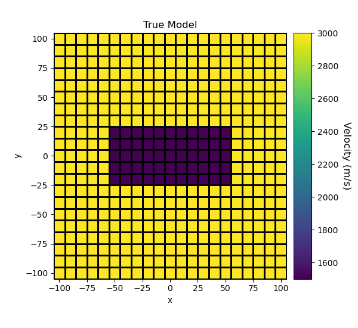
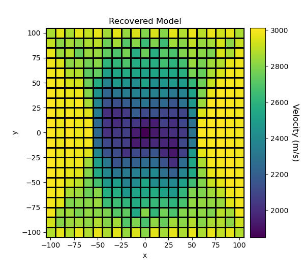

Note
Click here to download the full example code
Sparse Norm Inversion of 2D Seismic Tomography Data¶
Here we 2D straight ray tomography data to recover a velocity/slowness model. We formulate the inverse problem as an iteratively re-weighted least-squares (IRLS) optimization problem. For this tutorial, we focus on the following:
Defining the survey from xyz formatted data
Defining the inverse problem (data misfit, regularization, optimization)
Specifying directives for the inversion
Setting sparse and blocky norms
Plotting the recovered model
Import Modules¶
import os
import numpy as np
import matplotlib as mpl
import matplotlib.pyplot as plt
import tarfile
from discretize import TensorMesh
from SimPEG import (
data,
maps,
regularization,
data_misfit,
optimization,
inverse_problem,
directives,
inversion,
utils,
)
from SimPEG.seismic import straight_ray_tomography as tomo
# sphinx_gallery_thumbnail_number = 3
Define File Names¶
Here we provide the file paths to assets we need to run the inversion. The path to the true model is provided for comparison with the inversion results. These files are stored as a tar-file on our google cloud bucket: “https://storage.googleapis.com/simpeg/doc-assets/seismic.tar.gz”
storage bucket where we have the data
data_source = "https://storage.googleapis.com/simpeg/doc-assets/seismic.tar.gz"
# download the data
downloaded_data = utils.download(data_source, overwrite=True)
# unzip the tarfile
tar = tarfile.open(downloaded_data, "r")
tar.extractall()
tar.close()
# path to the directory containing our data
dir_path = downloaded_data.split(".")[0] + os.path.sep
# files to work with
data_filename = dir_path + "tomography2D_data.obs"
model_filename = dir_path + "true_model_2D.txt"
Out:
overwriting /Users/josephcapriotti/codes/simpeg/tutorials/12-seismic/seismic.tar.gz
Downloading https://storage.googleapis.com/simpeg/doc-assets/seismic.tar.gz
saved to: /Users/josephcapriotti/codes/simpeg/tutorials/12-seismic/seismic.tar.gz
Download completed!
Load Data, Define Survey and Plot¶
Here we load the observed data, define the survey geometry and plot the data.
# Load data
dobs = np.loadtxt(str(data_filename))
# Extract source and receiver locations and the observed data
xy_sources = dobs[:, 0:2]
xy_receivers = dobs[:, 2:4]
dobs = dobs[:, -1]
# Define survey
unique_sources, k = np.unique(xy_sources, axis=0, return_index=True)
n_sources = len(k)
k = np.r_[k, len(dobs) + 1]
source_list = []
for ii in range(0, n_sources):
# Receiver locations for source ii
receiver_locations = xy_receivers[k[ii] : k[ii + 1], :]
receiver_list = [tomo.Rx(receiver_locations)]
# Source ii location
source_location = xy_sources[k[ii], :]
source_list.append(tomo.Src(receiver_list, source_location))
# Define survey
survey = tomo.Survey(source_list)
# Define a data object. Uncertainties are added later
data_obj = data.Data(survey, dobs=dobs)
# Plot
n_source = len(source_list)
n_receiver = len(xy_receivers)
fig = plt.figure(figsize=(8, 5))
ax = fig.add_subplot(111)
obs_string = []
for ii in range(0, n_source):
x_plotting = xy_receivers[k[ii] : k[ii + 1], 0]
dobs_plotting = dobs[k[ii] : k[ii + 1]]
ax.plot(x_plotting, dobs_plotting)
obs_string.append("source {}".format(ii + 1))
ax.set_xlabel("x (m)")
ax.set_ylabel("arrival time (s)")
ax.set_title("Positions vs. Arrival Time")
ax.legend(obs_string, loc="upper right")
plt.show()
Assign Uncertainties¶
Inversion with SimPEG requires that we define standard deviation on our data. This represents our estimate of the noise in our data. In this case, we assign a 5 percent uncertainty to each datum.
Defining a Tensor Mesh¶
Here, we create the tensor mesh that will be used to invert the data.
Starting/Reference Model and Mapping on Tensor Mesh¶
Here, we create starting and/or reference models for the inversion as well as the mapping from the model space to the slowness. Starting and reference models can be a constant background value or contain a-priori structures. Here, the background is 3000 m/s.
# Define density contrast values for each unit in g/cc. Don't make this 0!
# Otherwise the gradient for the 1st iteration is zero and the inversion will
# not converge.
background_velocity = 3000.0
# Define mapping from model space to the slowness on mesh cells
model_mapping = maps.ReciprocalMap()
# Define starting model
starting_model = background_velocity * np.ones(mesh.nC)
Define the Physics¶
Here, we define the physics of the 2D straight ray tomography problem by using the simulation class.
# Define the forward simulation. To do this we need the mesh, the survey and
# the mapping from the model to the slowness value on each cell.
simulation = tomo.Simulation(mesh, survey=survey, slownessMap=model_mapping)
Define the Inverse Problem¶
The inverse problem is defined by 3 things:
Data Misfit: a measure of how well our recovered model explains the field data
Regularization: constraints placed on the recovered model and a priori information
Optimization: the numerical approach used to solve the inverse problem
# Define the data misfit. Here the data misfit is the L2 norm of the weighted
# residual between the observed data and the data predicted for a given model.
# Within the data misfit, the residual between predicted and observed data are
# normalized by the data's standard deviation.
dmis = data_misfit.L2DataMisfit(data=data_obj, simulation=simulation)
# Define the regularization (model objective function). Here, 'p' defines the
# the norm of the smallness term and 'q' defines the norm of the smoothness
# term.
reg = regularization.Sparse(mesh, mapping=maps.IdentityMap(nP=mesh.nC))
p = 0
qx = 0.5
qy = 0.5
reg.norms = np.c_[p, qx, qy]
# Define how the optimization problem is solved.
opt = optimization.ProjectedGNCG(
maxIter=100, lower=0.0, upper=1e6, maxIterLS=20, maxIterCG=10, tolCG=1e-4
)
# Here we define the inverse problem that is to be solved
inv_prob = inverse_problem.BaseInvProblem(dmis, reg, opt)
Define Inversion Directives¶
Here we define any directiveas that are carried out during the inversion. This includes the cooling schedule for the trade-off parameter (beta), stopping criteria for the inversion and saving inversion results at each iteration.
# Reach target misfit for L2 solution, then use IRLS until model stops changing.
update_IRLS = directives.Update_IRLS(
f_min_change=1e-4, max_irls_iterations=30, coolEpsFact=1.5, beta_tol=1e-2,
)
# Defining a starting value for the trade-off parameter (beta) between the data
# misfit and the regularization.
starting_beta = directives.BetaEstimate_ByEig(beta0_ratio=2e0)
# Save output at each iteration
saveDict = directives.SaveOutputEveryIteration(save_txt=False)
# Define the directives as a list
directives_list = [starting_beta, update_IRLS, saveDict]
Running the Inversion¶
To define the inversion object, we need to define the inversion problem and the set of directives. We can then run the inversion.
# Here we combine the inverse problem and the set of directives
inv = inversion.BaseInversion(inv_prob, directives_list)
# Run inversion
recovered_model = inv.run(starting_model)
Out:
/Users/josephcapriotti/opt/anaconda3/envs/simulation/lib/python3.8/site-packages/SimPEG/directives/directives.py:1494: UserWarning:
Without a Linear preconditioner, convergence may be slow. Consider adding `Directives.UpdatePreconditioner` to your directives list
SimPEG.InvProblem will set Regularization.mref to m0.
SimPEG.InvProblem is setting bfgsH0 to the inverse of the eval2Deriv.
***Done using same Solver and solverOpts as the problem***
model has any nan: 0
=============================== Projected GNCG ===============================
# beta phi_d phi_m f |proj(x-g)-x| LS Comment
-----------------------------------------------------------------------------
x0 has any nan: 0
0 2.58e-08 8.64e+02 0.00e+00 8.64e+02 1.27e-01 0
Reached starting chifact with l2-norm regularization: Start IRLS steps...
eps_p: 965.6321194806546 eps_q: 965.6321194806546
1 1.29e-08 2.65e+01 8.22e+09 1.32e+02 2.43e-02 0
2 3.56e-08 1.71e+01 7.86e+09 2.97e+02 5.56e-02 0
3 6.25e-08 4.01e+01 5.98e+09 4.14e+02 8.29e-02 0
4 4.80e-08 7.71e+01 4.26e+09 2.82e+02 4.30e-02 0
5 8.07e-08 4.43e+01 3.54e+09 3.30e+02 9.27e-02 0
------------------------- STOP! -------------------------
1 : |fc-fOld| = 4.8356e+01 <= tolF*(1+|f0|) = 8.6501e+01
1 : |xc-x_last| = 1.7175e+03 <= tolX*(1+|x0|) = 6.3001e+03
1 : |proj(x-g)-x| = 9.2730e-02 <= tolG = 1.0000e-01
0 : |proj(x-g)-x| = 9.2730e-02 <= 1e3*eps = 1.0000e-02
0 : maxIter = 100 <= iter = 5
------------------------- DONE! -------------------------
Plotting True Model and Recovered Model¶
# Load the true model
true_model = np.loadtxt(str(model_filename))
# Plot True Model
fig = plt.figure(figsize=(6, 5.5))
ax1 = fig.add_axes([0.15, 0.15, 0.65, 0.75])
mesh.plotImage(true_model, ax=ax1, grid=True, pcolorOpts={"cmap": "viridis"})
ax1.set_title("True Model")
ax2 = fig.add_axes([0.82, 0.15, 0.05, 0.75])
norm = mpl.colors.Normalize(vmin=np.min(true_model), vmax=np.max(true_model))
cbar = mpl.colorbar.ColorbarBase(
ax2, norm=norm, orientation="vertical", cmap=mpl.cm.viridis
)
cbar.set_label("Velocity (m/s)", rotation=270, labelpad=15, size=12)
plt.show()
# Plot Recovered Model
fig = plt.figure(figsize=(6, 5.5))
ax1 = fig.add_axes([0.15, 0.15, 0.65, 0.75])
mesh.plotImage(recovered_model, ax=ax1, grid=True, pcolorOpts={"cmap": "viridis"})
ax1.set_title("Recovered Model")
ax2 = fig.add_axes([0.82, 0.15, 0.05, 0.75])
norm = mpl.colors.Normalize(vmin=np.min(recovered_model), vmax=np.max(recovered_model))
cbar = mpl.colorbar.ColorbarBase(
ax2, norm=norm, orientation="vertical", cmap=mpl.cm.viridis
)
cbar.set_label("Velocity (m/s)", rotation=270, labelpad=15, size=12)
plt.show()
- 
- 
Total running time of the script: ( 0 minutes 8.936 seconds)